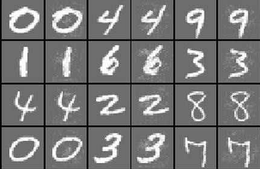

Expressiveness bring not only positives
State space is huge, sparse knowledge of what a network actually does
Turns out that this is useful for fooling a neural network
Szegedy et al [1] showed that
Small pertubations on an recognized image yields misclassifications
Hardly perceptible change to a human
The pertubations turned out to not be specific to the training set used
Rather invariant to hyperparameters and the chosen subset of training data
Examples was generated (optimized) for a number of networks
AlexNet (supervised, multi-class image classifier)
QuocNet (unsupervised, used as a binary classifier)
Simple fully connected network (supervised, MNIST)
Classifier+autoencoder (MNIST)
Image sets: original, enhanced difference and changed image
Image sets: orignal, changed image and enhanced difference
Adversial examples, 0% accuracy

Added gaussian noise, 51% accuracy
We can create images easily recognizable by a human that is foreign to a neural network.
Nguyen, Yosinski and Clune [2]
Investigated another difference between DNN and human vision
Looked at networks trained on the ImageNet and MNIST datasets
Optimized adversarial exemples using evolutionary algorithms or gradient ascent
Direct (pixelwise) and indirect (feature based, CPPN) encoding
EA, direct encoding
(99.99% certainty)
EA, indirect encoding
(99.99% certainty)
Direct encoding not successful over all classes
The ones with high confidence are at large indescernible
We can create images easily recognizable by a neural network that is foreign to a human.
DNN and humans see things differently
These kinds of studies helps to concretize this
Another way of understanding how DNNs behave
Insights about DNNs lead to new methods to combat adversarial examples
Has lead to numerous papers, e.g. [3] [4] [5] [6]
Will likely lead to long time improvement of DNNs
We said stuff, some of which could be interesting to highlight.
[1] C. Szegedy, W. Zaremba, I. Sutskever, J. Bruna, D. Erhan, I. J. Goodfellow, and R. Fergus, “Intriguing properties of neural networks,” CoRR, 2013.
[2] A. M. Nguyen, J. Yosinski, and J. Clune, “Deep neural networks are easily fooled: High confidence predictions for unrecognizable images,” CoRR, 2014.
[3] A. Fawzi, O. Fawzi, and P. Frossard, “Analysis of classifiers’ robustness to adversarial perturbations,” CoRR, 2015.
[4] N. Papernot, P. McDaniel, S. Jha, M. Fredrikson, Z. B. Celik, and A. Swami, “The limitations of deep learning in adversarial settings,” in 2016 ieee european symposium on security and privacy (euros p), 2016, pp. 372–387.
[5] N. Papernot, P. McDaniel, X. Wu, S. Jha, and A. Swami, “Distillation as a defense to adversarial perturbations against deep neural networks,” in 2016 ieee symposium on security and privacy (sp), 2016, pp. 582–597.
[6] I. J. Goodfellow, J. Shlens, and C. Szegedy, “Explaining and harnessing adversarial examples,” CoRR, 2014.